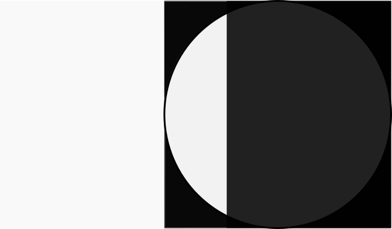

🌒 Moon Phase Project: Animating SVG | October 12, 2021
Few things are more inspiring then seeing the moon hanging in the night sky. Since it's October, I thought a moon phase component would be a nice small project to work some more with SVG animation.
For this project, I considered learning some library for CSS animations, but opted to keep it to pure JS and CSS. The simplest solution I was able to draft up is inspired by a CSS Tricks article with a similar concept.
The way I plan on making it work is to follow the cycle of moon phases, which spans 29.5 days. On day 0, 0% of the moon will be illuminated; halfway at 50% will depict a Full Moon; and by 100%,the New Moon will begin and the circle will again be empty.
This is a work in progress. I will log the results and the methods once completed.
10/13 UPDATE: Finished ahead of schedule
I should do more of these smaller, fun projects. Here's a breakdown of the methods.
The Maths
The functions I wrote with are based on Javascript's "Date.now()" method. It outputs time in milliseconds elapsed since 1/1/1970 12am to the moment the method is called. I discovered that the first New Moon of 1970 was on January 7th. This became the reference point for calculating 3 data points: Lunation Number, Lunar Age, and Illumination/Lunar Phase.
- Lunation Number: Represents how many Lunations, or Lunar Cycles, have passed since an arbitrary date.
- Lunar Age: Represents how many days into the current Lunation, ranging from Day 1 to Day 29. Here in this project it's represented as a percentage.
- Lunar Illumination: Percentage of the moon which is reflecting sunlight towards us, creating the illuminated moon that we perceive.
Hopefully these functions are helpful.
The SVG Animation
But really the star of the show, or 🌒 of the show, is the CSS animation. It's super simple, yet satisfying to get it to work. It takes the calculation derived from the Lunar Illumination function. So it is an accurate depiction of the way the moon looks in the sky! I'm sure it's not totally futureproof, though, because I'm rounding. Should be good for like a couple decades or something.
The mechanisms behind the animation involves three "layers" of SVG: an overlay with a window cutout of it so you can see the moon, the illuminated part of the moon, and the shaded part of the moon. The illumniated and shaded parts of the moon are actually identical circle SVG's with different fill colors, but one is static and the other is sliding along the X-axis aaccording to the Illumination calculation. The trick of the overlay is that it blends in with the page background. Maybe I'll do a tutorial to explain in more detail.
Summary
From this project I took a reusable SVG animation trick, got familar with built-in Javascript "Date()" methods, and learned about the moon.
Also, I went loony when I discovered International Observe the Moon Day is in just a few days.
Hopefully this was helpful.